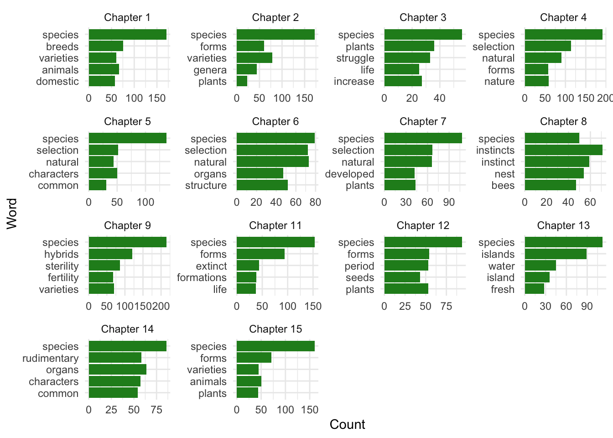

library(tidyverse)
library(here)
library(tidytext)
library(textdata)
library(pdftools)
library(ggwordcloud)About
This blog post conducts a text mining and NRC sentiment analysis using text from “The Origin of Species” by Charles Darwin, 6th Edition.
To access data, html and Rmd/qmd files:
Load packages
Read in the Origin of Species, 6th Edition by Darwin
os_text <- pdf_text(here("posts", "2021-02-23-text-wrangling-and-analysis", "originofspecies6th-darwin.pdf"))Text into a data frame, then wrangling with the tidyverse, break it up by chapter, and do some basic analyses.
os_tidy <- data.frame(os_text) %>%
mutate(text_full = str_split(os_text, pattern = '\\n')) %>%
unnest(text_full) %>%
mutate(text_full = str_trim(text_full))os_df <- os_tidy %>%
slice(-(1:184)) %>%
mutate(chapter = case_when(
str_detect(text_full, "CHAPTER") ~ str_extract(text_full, "CHAPTER [1-9]+"),
TRUE ~ NA_character_
)) %>%
fill(chapter) %>%
separate(col = chapter, into = c("cha", "no"), sep = " ") %>%
mutate(chapter = as.numeric(no))Word count by Chapter
os_tokens <- os_df %>%
unnest_tokens(word, text_full) %>%
select(-os_text)
os_tokens_clean <- os_tokens %>%
mutate(word = str_replace(word, "[0-9-]+", NA_character_)) %>%
drop_na()
os_wordcount <- os_tokens_clean %>%
count(chapter, word) Remove stop words and recounting again
os_nonstop_words <- os_tokens_clean %>%
anti_join(stop_words)Joining, by = "word"nonstop_counts <- os_nonstop_words %>%
count(chapter, word) Top 5 words by chapter
top_5_words <- nonstop_counts %>%
group_by(chapter) %>%
arrange(-n) %>%
slice(1:5)
ch_names <- list(
"1" ="Chapter 1",
"2" = "Chapter 2",
"3" = "Chapter 3",
"4" = "Chapter 4",
"5" = "Chapter 5",
"6" = "Chapter 6",
"7" = "Chapter 7",
"8" = "Chapter 8",
"9" = "Chapter 9",
"10" = "Chapter 10",
"11" = "Chapter 11",
"12" = "Chapter 12",
"13" = "Chapter 13",
"14" = "Chapter 14",
"15" = "Chapter 15"
)
ch_labeller <- function(variable,value){
return(ch_names[value])
}
## vizualization
ggplot( data = top_5_words,
aes(reorder(word, n), n )) +
geom_col(fill = "forestgreen") +
facet_wrap(~chapter, scales = "free", labeller=ch_labeller) +
coord_flip() +
theme_minimal() +
labs(x = "Word", y = " Count")
Word cloud for all text
nonstop_counts_full <- os_nonstop_words %>%
count(word)
os_top100_removesps <- nonstop_counts_full %>%
arrange(-n) %>%
slice(1:100)
os_cloud <- ggplot(data = os_top100_removesps, aes(label = word)) +
geom_text_wordcloud(aes(color = n, size = n), shape = "circle") +
scale_size_area(max_size = 10) +
scale_color_gradient(low = "darkseagreen", high = "forestgreen") +
theme_minimal()
os_cloud
#ggsave(here("src","originofspecies-wc-ea.png"), width = 8, height = 5) # to saveSentiment analysis using “NRC” lexicon
## nrc to just check out
os_nrc <- os_nonstop_words %>%
inner_join(get_sentiments("nrc"))Joining, by = "word"os_nrc_counts <- os_nrc %>%
count(chapter, sentiment)
os_nrc_viz<- ggplot(data = os_nrc_counts, aes(x = sentiment, y = n)) +
geom_col() +
facet_wrap(~chapter, labeller=ch_labeller) + # ch_labeller function defined in steps above
coord_flip() +
theme_minimal(base_size = 14) +
theme(axis.title.y = element_text(margin = margin(t = 20, r = 0, b = 0, l = 20))) +
labs(y = "Word Count", x = "NRC sentiment", title = "Sentiment analysis of the Origin of Species by Charles Darwin \nusing NRC from Saif Mohammad and Peter Turney")
ggsave("origin-of-species-nrc-analysis.png", os_nrc_viz, width = 12, height = 8, units = "in", dpi = 300)Citations:
- NRC lexicon: Crowdsourcing a Word-Emotion Association Lexicon, Saif Mohammad and Peter Turney, Computational Intelligence, 29 (3), 436-465, 2013.
- Origin of Species Text